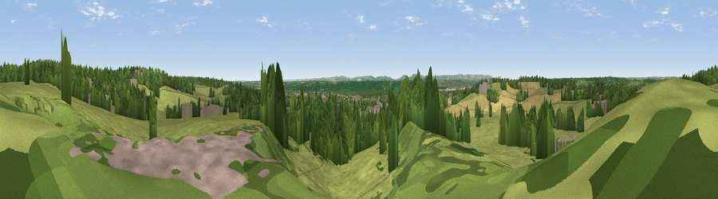

Viewpoint near Cold Ash
#26039 in England · top 33% of its area beats it · near Cold AshThe view, rendered

A 360° render of this exact spot computed from the terrain model, tree cover and land cover — summer colours, afternoon light, calibrated against photographs of famous viewpoints. Real trees, hedges and buildings will differ in detail.
The panorama
Grey silhouette: terrain skyline in each direction (720 bearings, Earth curvature and refraction included). Dashed green: skyline with trees (+15 m) and buildings (+8 m) as obstacles. Blue strip: how far the ground is visible on each bearing.
Where the view opens
Wedge length = distance to the farthest visible ground on that bearing (vegetation-aware). Rings at 10, 25 and 50 km.
What fills the view
52% grassland · 31% woodland · 9% cropland · 8% built-up
Angular shares of the visible panorama (visual magnitude), not map area. Landscape diversity 0.49 (0–1 Shannon).
Key numbers
More beautiful places nearby
The staircase of upgrades: each row has a higher view potential than everything closer. Driving times are estimates from straight-line distance, calibrated against real road routing — check an actual route before setting out.
| Place | Direction | Drive | Score |
|---|---|---|---|
| Viewpoint near Cold Ash | ENE · 1 km | ~3 min | 48.8 |
| Viewpoint near Ecchinswell | S · 12 km | ~23 min | 60.5 |
| Viewpoint near Ecchinswell | S · 12 km | ~23 min | 65.7 |
| Watership Down | S · 12 km | ~23 min | 71.4 |
| Beacon Hill | SSW · 13 km | ~24 min | 76.7 |
| Martinsell viewpoint | W · 33 km | ~51 min | 77.3 |
| Viewpoint near Buriton | SSE · 53 km | ~75 min | 80.0 |
| Beacon Hill | SSE · 59 km | ~81 min | 85.8 |
51.41887, -1.27121 · source: screening · position refined by local search. Computed location — check access rights before visiting.